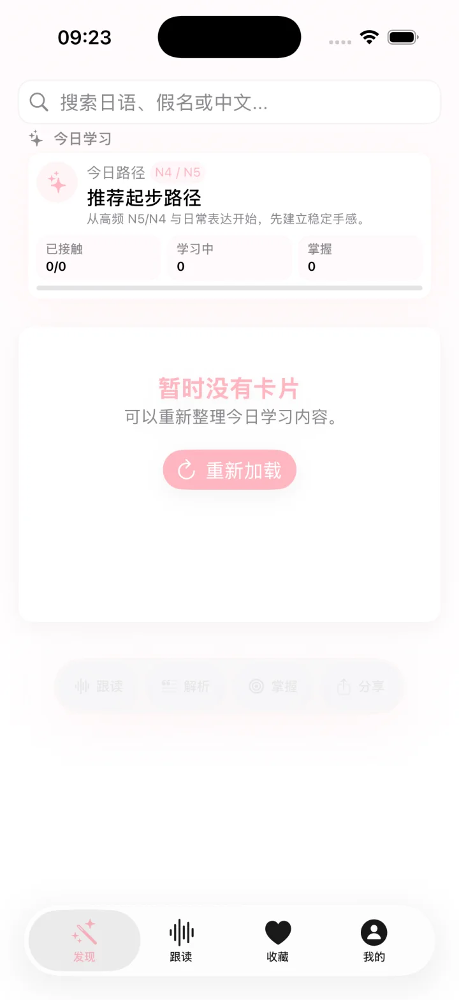

推荐路径
从高频 N5/N4 与日常表达起步，逐步建立稳定手感；路径进度与实际学习记录保持一致。

How it works
发现不是无尽随机流。学习范围、内容偏好、学习模式与复习队列共同决定今天出现什么。
从高频 N5/N4 与日常表达起步，逐步建立稳定手感；路径进度与实际学习记录保持一致。
使用日语标题、假名读音或中文含义查找词汇、语法与文化内容。
发音是卡片上的第一层动作；详情、AI 解释、掌握选择与分享则按需展开，不遮挡学习内容。
掌握度选择会明确说明复习间隔后果，并把记录带入历史、统计与后续复习。